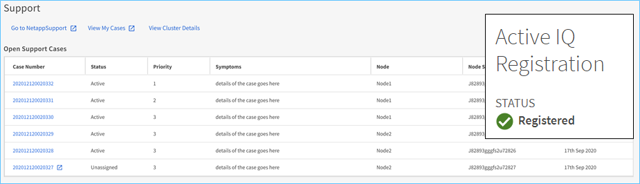
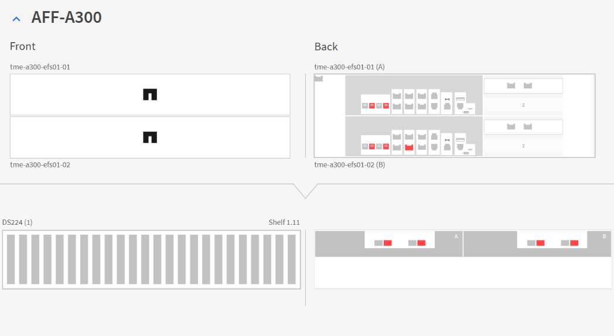
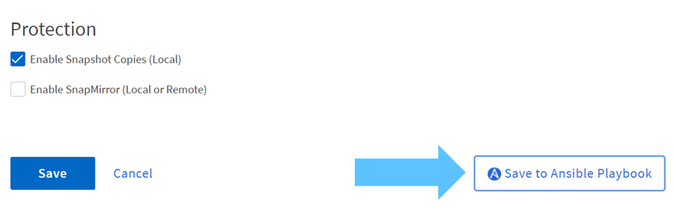

Panoramica delle funzionalità di NetApp ONTAP 9.9.1
Panoramica delle funzionalità di NetApp ONTAP 9.9.1
Miglioramenti di System Manager
 Suggerisci modifiche
Suggerisci modifiche
Con l’esperienza grafica rinnovata per ONTAP introdotta in ONTAP 9.8, potresti aver notato che alcuni elementi sono stati spostati o non erano più disponibili. In ONTAP 9.9.1, abbiamo raccolto il feedback dei clienti e risolto alcuni dei problemi relativi alla GUI e abbiamo aggiunto alcune delle funzionalità mancanti, oltre ad aggiungere nuove e migliorate funzionalità. La sezione seguente illustra alcune di queste modifiche e nuove aggiunte. È inoltre possibile trovare informazioni su System Manager in "Documentazione di System Manager".
Funzionalità ripristinate/miglioramenti dell’usabilità
L’hai chiesto e abbiamo ascoltato. In ONTAP 9.9.1, alcune delle funzionalità non più disponibili in Gestione di sistema di ONTAP 9.8 sono state aggiunte nuovamente al prodotto. Inoltre, sono stati inclusi nuovi miglioramenti per l’usabilità.
Selezione manuale di Tier/aggregati locali durante il provisioning dei volumi
System Manager 9.9.1 consente di selezionare manualmente il Tier di storage fisico da utilizzare per il provisioning di nuovi volumi, inclusa la possibilità di specificare gli aggregati durante la creazione del volume FlexGroup. In alternativa, è comunque possibile consentire a ONTAP e a Gestore di sistema di effettuare selezioni in base alla logica di posizionamento bilanciata.
Miglioramenti della visualizzazione della capacità
Ora puoi visualizzare lo spazio logico utilizzato dalle copie Snapshot in ONTAP, oltre a vedere come appaiono i tuoi rapporti di efficienza dello storage con e senza le copie Snapshot.
La figura seguente mostra la visualizzazione della capacità di Gestione sistema ONTAP 9.9.1.

NVMe su Fibre Channel - creazione LIF
Con System Manager, è ora possibile creare e visualizzare le LIF utilizzate con gli spazi dei nomi NVMe over Fibre Channel, inclusi gli stati delle porte, la selezione asimmetrica delle porte e la possibilità di visualizzare il numero di LIF creati per porta per evitare di sovraccaricare un’interfaccia di rete fisica.
Visualizzatore eventi EMS – Dashboard
Per una visualizzazione più rapida dei problemi che potrebbero verificarsi nel cluster ONTAP, System Manager 9.9.1 aggiunge gli eventi EMS nella dashboard al primo accesso. Ciò include errori nelle ultime 24 ore, come dischi guasti, collegamenti di rete non attivi, problemi di licenza ed errori di shelf o nodi.
Vengono inoltre visualizzati avvisi relativi alle ultime 24 ore, inclusi spostamenti di volume non riusciti e avvisi di monitoraggio dello stato di salute.
Dimensioni di Snapshot ed etichette SnapMirror
Dalle viste Snapshot in System Manager, è possibile visualizzare le dimensioni e le etichette delle istantanee (ad esempio, giornaliere, settimanali e così via) sulle copie Snapshot di SnapMirror.

Ripristino delle LIF dei dati
Durante i failover o dopo che sono state risolte le interruzioni di rete, le LIF dei dati spesso rimangono sulla porta di failover, il che può creare potenziali problemi di performance e resilienza. Se hai bisogno di un modo semplice per inviare i dati LIF a casa, System Manager 9.9.1 offre ora un metodo con un solo clic per inviare tutti i dati LIF alle porte home desiderate.
Nuovi campi di volume da mostrare/nascondere
Sono disponibili altri metodi per visualizzare le informazioni sul volume in System Manager 9.9.1 tramite il pulsante Mostra/Nascondi, inclusi i livelli locali e le informazioni disponibili/utilizzate.
La figura seguente illustra le nuove viste dei volumi in Gestione di sistema di ONTAP 9.9. 1.

Operazioni in blocco
Se è necessario eseguire più spostamenti o eliminazioni di volumi, mappare più LUN a un gruppo iniziatore o aggiungere più volumi a un livello cloud, è ora possibile selezionare più oggetti ed eseguire attività. Le eliminazioni dei volumi sono inoltre in grado di smontare, disconnettere e confermare le eliminazioni in una singola finestra.
La figura seguente mostra le eliminazioni semplificate dei volumi in Gestione di sistema di ONTAP 9.9.1.

Integrazione Active IQ
Nell’interesse di offrire agli utenti ONTAP un singolo access point per più origini di informazioni, System Manager 9.9.1 fornisce l’integrazione con la soluzione NetApp Active IQ. In questo modo è possibile ottenere consigli sul firmware, nonché un metodo per scaricare le immagini direttamente dal sito di supporto NetApp e visualizzare facilmente i casi di supporto per visualizzare i dati relativi al cluster. Per iniziare, accedere al collegamento Support (supporto) sotto Cluster (cluster) nel menu a sinistra e registrare il cluster con Active IQ.
La figura seguente mostra le viste Active IQ in Gestione sistemi ONTAP 9.9.1.

Espansione della piattaforma di visualizzazione hardware
La visualizzazione dell’hardware include informazioni quali modelli di piattaforma, numeri di serie, stato di takeover/giveback, stato del disco, informazioni sulle porte e molto altro ancora. ONTAP 9.9.1 offre un supporto aggiunto per la visualizzazione dell’hardware per includere tutte le piattaforme AFF correnti.

I seguenti componenti sono supportati in ONTAP 9.9.1:
-
Piattaforme. C190 / A220 / A250 / A300 / A400 / A700 / A700s / A800 / A320 / FAS500f
-
SHELF DI DISCHI. DS4243 / DS4486 / DS212C / DS2246 / DS224C / NS224
-
Network Switch. Cisco Nexus 3232C / Cisco Nexus 9336C-FX2
Workflow di Ansible Playbook
Sempre più aziende stanno passando all’automazione delle attività quotidiane utilizzando applicazioni come Ansible per fornire flussi di lavoro ripetibili e privi di errori. NetApp dispone di un’intera libreria di playbook Ansible, che puoi trovare su "Pagina Ansible per NetApp".
System Manager 9.9.1 aggiunge ulteriori possibilità per utilizzare Ansible con un nuovo metodo per generare playbook con un solo clic. Per utilizzare questi playbook, installare Ansible e NetApp Collection da "Ansible Galaxy"Tuttavia, è possibile iniziare a creare i playbook facendo clic sul collegamento Save to Ansible Playbook (Salva in Ansible Playbook) in alcune attività di provisioning dello storage in System Manager.

Facendo clic su questo pulsante viene creato un file .zip con i file .yaml necessari per Ansible.

Miglioramenti dell’analisi del file system
In ambienti con elevato numero di file, il tentativo di trovare informazioni sulla capacità delle cartelle, sull’età dei dati e sul numero di file richiede di solito comandi o script che eseguono operazioni seriali su protocolli NAS, ad esempio ls, du, find, e. stat.
Il gestore di sistema ONTAP 9.8 ha introdotto un modo per gli amministratori di trovare le informazioni del file system in qualsiasi volume di storage NAS in modo rapido e semplice, abilitando uno scanner a basso impatto per ciascun volume. Questo scanner esegue la ricerca del file system ONTAP in background con un lavoro a bassa priorità e fornisce numerose informazioni disponibili non appena si passa a un volume abilitato.
Abilitazione in corso "Analisi del file system" è semplice quanto navigare fino al volume che si desidera acquisire. Accedere a Storage > Volumes (Storage > volumi), quindi utilizzare la ricerca per trovare il volume desiderato. Fare clic sul volume, quindi sulla scheda Explorer.
Da qui, viene visualizzato il link Enable Analytics (attiva analisi) sul lato destro della pagina.

Dopo aver fatto clic su ENABLE (attiva), lo scanner si avvia. Il tempo di completamento dipende dal numero di oggetti nel volume e dal carico di sistema. Al termine, l’intera struttura di directory viene popolata nella vista System Manager. Questa vista può essere esplorata lungo la struttura delle directory e fornisce l’accesso alle informazioni sulla cronologia, sulle dimensioni della directory e sulle dimensioni dei file.
ONTAP 9.9.1 offre alcuni miglioramenti aggiuntivi alla funzionalità, come il filtraggio in base al nome del file o della directory e l’esecuzione "eliminazione rapida della directory".
Altri miglioramenti di System Manager 9.9.1
ONTAP 9. 9.1 offre inoltre i seguenti miglioramenti a System Manager:
|
|